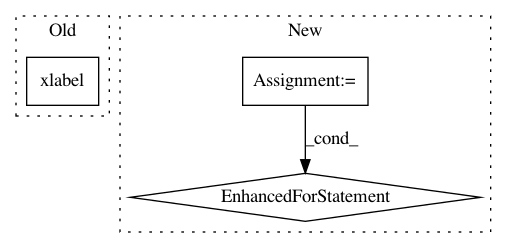

7a7d0e7b35cbee6b3409ac30ff4bf4edfe525af2,alphapy/plots.py,,plot_confusion_matrix,#Any#Any#,593
Before Change
// labels
plt.tight_layout()
plt.ylabel("True Label")
plt.xlabel("Predicted Label")
// save the chart
tag = USEP.join([pstring, algo])
write_plot("matplotlib", plt, "confusion", tag, plot_dir)
After Change
// loop over data dimensions and create text annotations
thresh = (cm.max() + cm.min()) / 2.0
for i in range(cm.shape[0]):
for j in range(cm.shape[1]):
ax.text(j, i, format(cm[i, j], fmt),
ha="center", va="center",
color="white" if cm[i, j] > thresh else "black")
// show the color bar
im = ax.imshow(cm, interpolation="nearest", cmap=cmap)
ax.figure.colorbar(im, ax=ax)
// save the chart
In pattern: SUPERPATTERN
Frequency: 3
Non-data size: 3
Instances
Project Name: ScottfreeLLC/AlphaPy
Commit Name: 7a7d0e7b35cbee6b3409ac30ff4bf4edfe525af2
Time: 2019-11-17
Author: Mark.R.Conway@gmail.com
File Name: alphapy/plots.py
Class Name:
Method Name: plot_confusion_matrix
Project Name: has2k1/plotnine
Commit Name: db31f8b4639b478cd77660d682bb0c27364aa3f1
Time: 2017-09-29
Author: has2k1@gmail.com
File Name: plotnine/qplot.py
Class Name:
Method Name: qplot
Project Name: tensorlayer/tensorlayer
Commit Name: 16a31e2c9fedc654e9117b42b8144adf1d0e4900
Time: 2020-02-03
Author: 34995488+Tokarev-TT-33@users.noreply.github.com
File Name: examples/reinforcement_learning/tutorial_A3C.py
Class Name:
Method Name: